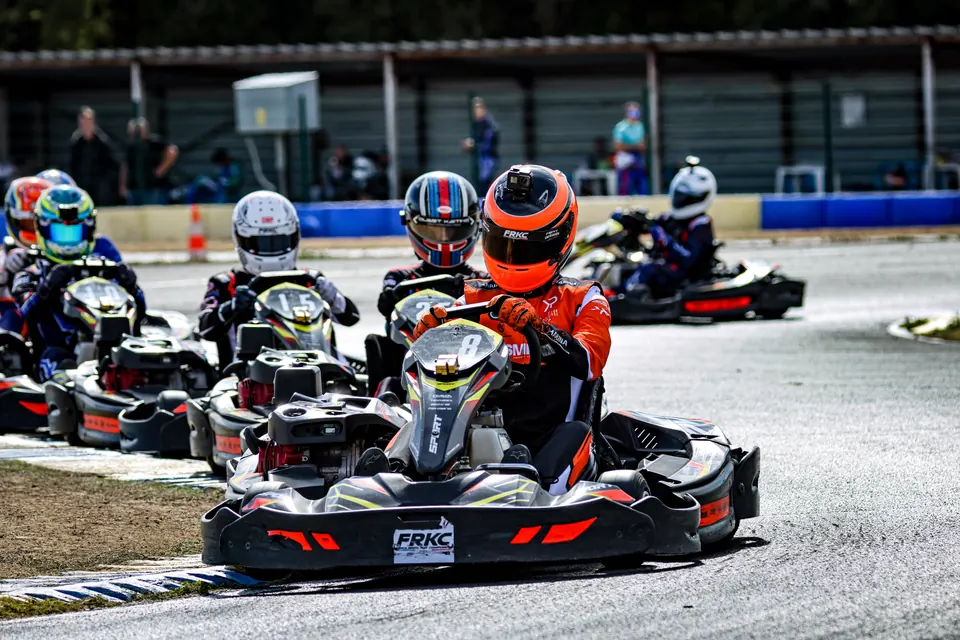

MB Saison 2026-2027
Le calendrier
Les courses à venir, et tous les résultats officiels depuis 2025. Les dates viennent des pages de l’organisateur.
01 À venir
Sur la grille.
Prochaine course
FRKC Indoor 2027
5 au 7 février 2027 · Metz Kart Indoor
-
FRKC Indoor 2027
Date : 5 au 7 février 2027. Lieu : Metz Kart Indoor, Augny (Moselle)
Vendredi : entraînements officiels. Samedi : entraînements et manche 1. Dimanche : manches 2 à 5, demi-finale, finale.
Page officielle (nouvel onglet) -
KWC 2027, le mondial
Date : 26 au 31 juillet 2027. Lieu : Kart Center Campillos, Campillos (Espagne)
Le championnat du monde du kart de location. Le vainqueur du FRKC Outdoor y gagne sa place.
Page officielle (nouvel onglet) -
FRKC Outdoor 2027
Date : 2027. Lieu : Circuit International Anthoine Hubert, Angerville (Essonne)
Date pas encore annoncée par l’organisateur. Objectif : la finale du TOP 24.
Page officielle (nouvel onglet)
02 Résultats
Les résultats.
-
23 août 2026
25e sur 100
FRKC Outdoor 2026
Circuit International Anthoine Hubert, Angerville (Essonne)
5e en demi-finale, premier non qualifié pour la finale. Podium en manche 4 (3e).
-
2026
Vice-champion
CRKI Saison 2, 90 kg
Circuits indoor de l’Est, Grand Est
2e sur 47 pilotes classés (saison 2025-2026).
-
2026
19e sur 100
FRKC Indoor 2026
Metz Kart Indoor, Augny (Moselle)
Meilleur Junior français, 3e Français. Podiums de manche : 3e et 2e.
-
2025
39e sur 55
FRKC Outdoor 2025
Circuit International Anthoine Hubert, Angerville (Essonne)
Catégorie Junior : 8e Junior sur 13. Demi-finale : 12e.
-
2025
Champion
CRKI Saison 1, Junior
Circuits indoor de l’Est, Grand Est
1er sur 28 pilotes classés, jamais hors du top 5.
03 Comment ça se court
Un FRKC, en quatre temps.
Le format officiel du FRKC Outdoor : entraînements le samedi, courses le dimanche. Le vainqueur gagne sa place au KWC, le championnat du monde du kart de location.
- Les manches5 × 10 min
Chaque pilote court cinq manches, avec un Hot Lap (tour lancé chronométré) qui fixe l’ordre de départ.
- Le tour Joker1 par manche
Un passage obligatoire par une portion plus longue du circuit, à placer au meilleur moment.
- La demi-finaleTOP 50
15 minutes, un Hot Lap et un tour Joker. Puis des duels au chrono pour la grille de finale.
- La finaleTOP 24
20 minutes et deux tours Joker. Trophées pour le top 3 au général, en Junior et en Master.